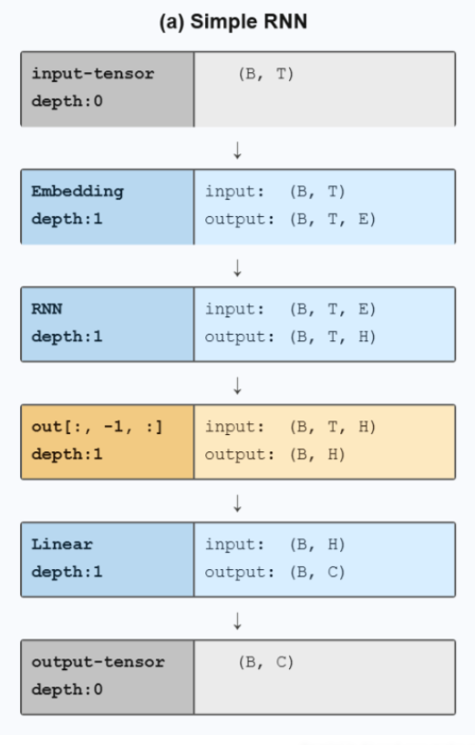
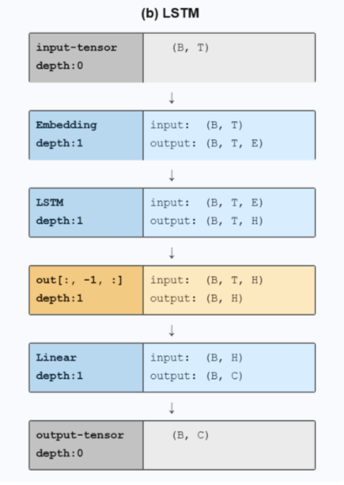
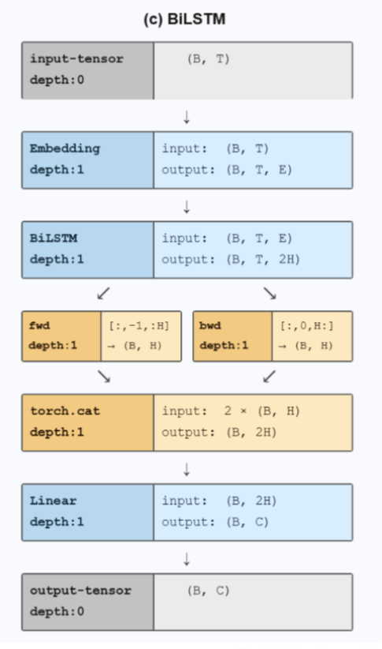
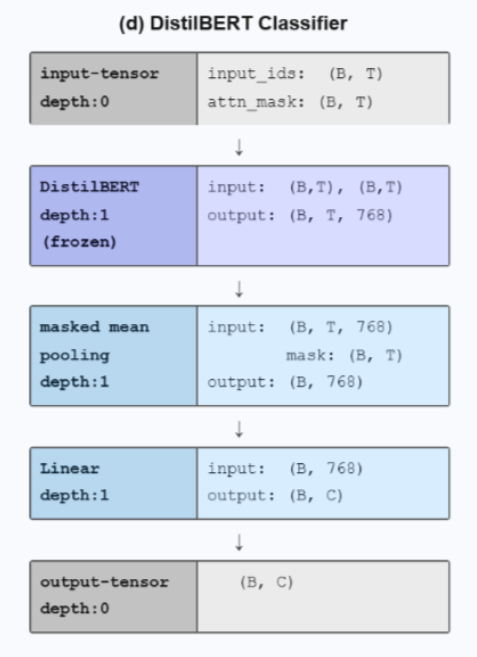

RNN SimpleRNN
- 1-layer vanilla RNN, hidden size tuned for speed.
- Max seq length 60, vocab 33,464, trainable embeddings.
- Baseline to show long-range limitations.
- Params: 4.32M · Inference: 0.0118 ms/sample.
Four text classifiers: SimpleRNN, LSTM, BiLSTM, and DistilBERT, configured for 60-token (RNNs) and 128-token (Transformer) inputs.
Models chosen to balance simplicity, recurrent memory, and pretrained context.



